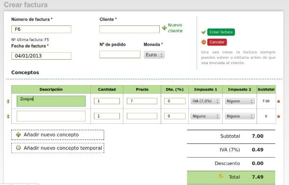

Una factura electrónica o factura digital, es un documento que sirve para describir el costo de los servicios y desglosar los impuestos correspondientes a pagar. Sustituye, según las disposiciones legales correspondientes, a las facturas tradicionales en papel y garantiza, entre otras cosas, la autenticidad de su origen y la integridad de su contenido.
La factura electronica es, por tanto, la versión digital de las facturas tradicionales en soporte papel y debe ser funcional y legalmente equivalente a estas últimas. Por su propia naturaleza, las facturas electrónicas pueden almacenarse, gestionarse e intercambiarse por medios electrónicos o digitales.
Para que la factura electrónica tenga validez legal, debe estar completada con la firma electrónica, que permite eliminar la factura en papel.

La factura electrónica es un tipo de factura que se diferencia de la factura en papel por la forma de gestión informática y el envío mediante un sistema de comunicaciones que conjuntamente permiten garantizar la autenticidad y la integridad del documento electrónico.
Una factura electrónica se construye en 2 fases:
Se crea la factura tal y como se ha hecho siempre y se almacena en un fichero de datos.
Posteriormente se procede a su firma con un certificado digital o electrónico propiedad del emisor que cifra el contenido de factura y añade el sello digital a la misma
Al terminar obtenemos una factura que nos garantiza:
que la persona física o jurídica que firmó la factura es quien dice ser (autenticidad) y
que el contenido de la factura no ha sido alterado (integridad).
El emisor envía la factura al receptor mediante medios electrónicos, como pueden ser CD, memorias Flash e incluso Internet. Si bien se dedican muchos esfuerzos para unificar los formatos de factura electrónica, actualmente está sometida a distintas normativas y tiene diferentes requisitos legales exigidos por las autoridades tributarias de cada país, de forma que no siempre es posible el uso de la factura electrónica, especialmente en las relaciones con empresas extranjeras que tienen normativas distintas a la del propio país.
Los requisitos legales respecto al contenido mercantil de las facturas electrónicas son exactamente las mismas que regulan las tradicionales facturas en papel. Los requisitos legales en relación con la forma imponen determinado tratamiento en aras de garantizar la integridad y la autenticidad y ciertos formatos que faciliten la interoperabilidad.
Existen algunas normativas internacionales aplicables de forma general a la factura electrónica, aunque las Naciones Unidas, a través de UN/ROSA han publicado recomendaciones tales como UNeDocs que definen plantillas para las facturas impresas y formatos EDI y XML para las modalidades electrónicas. En Europa, la facturación electrónica se regula en la Directiva 115/2001, que debía ser adoptada en cada país antes del 31 de diciembre de 2003.
Hoy día la organización GS1 (antes EAN/UCC) a nivel mundial ha organizado comités internacionales de usuarios de 108 países miembro, para conformar las guías de facturación electrónica estándar a nivel mundial.
La factura electrónica permite que instituciones, empresas y profesionales dejen atrás las facturas en papel y las reemplacen por la versión electrónica del documento tributario. Tiene exactamente la misma validez y funcionalidad tributaria que la factura tradicional en papel. Todo el ciclo de la facturación puede ser administrado en forma electrónica.
Dependiendo del tamaño de las empresas y el volumen de su facturación, el ahorro en concepto de emisión y gestión de facturas (emisión, envío, recepción, almacenaje, búsqueda, firma, devolución, pago, envío, etc.) puede fluctuar entre el 40% y el 80%. Entre los motivos que hacen posible este ahorro se encuentran:
Oportunidad en la información, tanto en la recepción como en el envío.
Ahorro en el gasto de papelería, la factura electrónica es ecológica.
Facilidad en los procesos de auditoría.
Mayor seguridad en el resguardo de los documentos.
Menor probabilidad de falsificación.
Agilidad en la localización de información.
Eliminación de espacios para almacenar documentos históricos.
Procesos administrativos más rápidos y eficientes.
Reducción de costes.
Mejora de la eficiencia.
Aumenta la seguridad documental.
Reducción en tiempos de gestión.
Mayor agilidad en la toma de decisiones.
Reduce errores en el proceso de generación, captura, entrega y almacenamiento.
Registro de la hora, el minuto y el segundo de emisión del comprobante fiscal digital (time stamp o sello del fechador).
Adecuaciones sencillas en el archivo de impresión
Obtención de sellos en serie y folios de serie ante la Secretaría de Hacienda y Crédito Público, con previa obtención de la Firma Electrónica Avanzada.
Contabilidad automatizada.
Facilidad para el cálculo de impuestos.
Por otro lado, una vez que las empresas empiecen a operar con esta tecnología, se verán incentivadas a digitalizar otros documentos, logrando eficiencia y ahorro en otras áreas de la empresa. El control tributario se incrementa con la factura electrónica, ya que permite un mayor control del cumplimiento tributario y simplificación de la fiscalización.